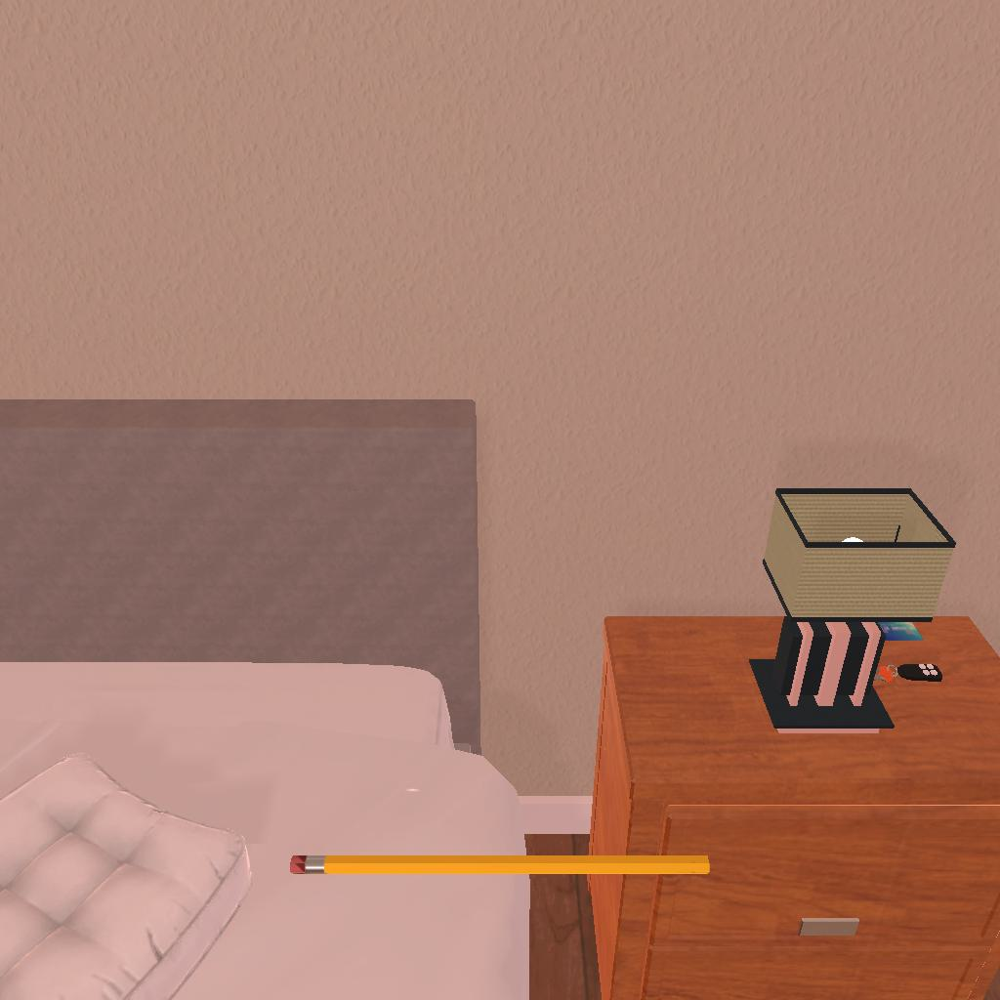

---------------------------------------------------------task: 2---------------------------------------------------------
--------------------------------------------------------------------------------------------------------------------------------------------------------------------
--------------------------------------------------------------------------------------------------------------------------------------------------------------------
Step:--------------------------------------------------------------------------6-------------------------------------------------------------------------------
----------------------------------------
VLM Prompt:
Image1:
**Instruction**
1. Analyze the provided image to identify all visible household objects, focusing on those relevant to the task description "look at pen under the desklamp."
2. Use the analysis of the image and the task hint "The agent must find an object of the desired type, locate and turn on a light source with the desired object in-hand." to answer the question: what is the most reasonable action in the choices for the task description "look at pen under the desklamp"?
4. Decide and write the answer using the template: The answer is: (i): , where i is the real number. If there is no desired object in the image, search every place based on **Initial Observation** to find the object. And if no one is exactly correct, choose a similar answer.
**Initial Observation**
You are in the middle of a room. Looking quickly around you, you can see bed (1-2), dresser (1), drawer (1-11), sidetable (1-2), desk (1), garbagecan (1), safe (1)
**Answer Choices**
(1): go to bed 1
(2): go to dresser 1
(3): go to bed 2
(4): go to drawer 1
(5): go to sidetable 1
(6): go to drawer 2
(7): go to drawer 3
(8): go to drawer 4
(9): go to desk 1
(10): go to garbagecan 1
(11): go to drawer 5
(12): go to drawer 6
(13): go to drawer 7
(14): go to drawer 8
(15): go to drawer 9
(16): go to drawer 10
(17): go to drawer 11
(18): go to safe 1
(19): put pencil 2 in/on sidetable 2
(20): use desklamp 1
(21): examine pencil 2
**Answer**
Let's think step by step by following the instructions.
----------------------------------------
----------------------------------------
Original Response:
First, we need to identify all visible household objects relevant to the task description "look at pen under the desklamp." In the image, we can see a bed, a sidetable, and a desklamp on the sidetable. There is also a pencil on the bed, which could be mistaken for a pen due to its shape and size, but the task specifically mentions a "pen."
Next, based on the task hint, the agent must find an object of the desired type (a pen), locate and turn on a light source (the desklamp) with the desired object in-hand. However, there is no pen visible in the image, so we must search every place based on "Initial Observation" to find the object.
Looking at the answer choices, there is no action that describes "search for a pen," but there is an action to "use desklamp 1" which would be necessary after finding the pen. Since we cannot see a pen in the image, we will need to search for it in the drawers or other places listed in the "Initial Observation."
The most reasonable action from the choices given, considering that we need to find a pen first, would be to start searching the drawers since they are common places to find pens.
The answer is: (4): go to drawer 1.
----------------------------------------
----------------------------------------
>>> Refine Original VLM Response and Get Pure Action: go to drawer 1
----------------------------------------
-----------------------------------------------------------------
Running time: 13.178765773773193 seconds
Total Money: 0.5526199999999999
-----------------------------------------------------------------
-----------------------------------------------------------------
Text Observation:You arrive at loc 3. The drawer 1 is closed.
-----------------------------------------------------------------
UNSUCCEED